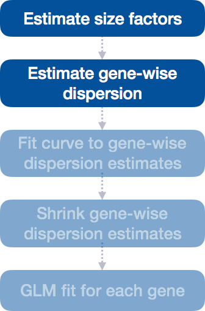

Chapter 4 DGE analysis workflow
Differential expression analysis with DESeq2 involves multiple steps as displayed in the flowchart below in blue.
 Here’s a more succinct version of your workflow:
Here’s a more succinct version of your workflow:
DESeq2 Workflow Overview:
Load Data: Start with raw count data and sample metadata.
Normalize Counts: Estimate size factors to adjust for sequencing depth or library size differences.
Estimate Dispersion: Calculate gene-wise dispersion, measuring variability in counts not explained by mean expression.
Fit Dispersion Trend: Model the relationship between mean counts and dispersion, either parametrically (default) or non-parametrically.
Shrink Dispersions: Use empirical Bayes shrinkage to stabilize dispersion estimates, particularly for low-count genes. Empirical Bayes is a version of Bayesian statistics where the prior distribution is estimated from the data itself, rather than being set externally. In empirical Bayes shrinkage, the idea is to estimate a common pattern or distribution (the prior) across all observations (e.g., all genes) and then use this estimated distribution to influence or “shrink” each individual observation.
Fit NB Model: Fit a negative binomial model using the shrunken dispersion estimates, capturing variability and estimating log-fold changes.
Shrink Log-Fold Changes: Optionally stabilize log-fold changes with regularization, especially for low-expression genes.
Statistical Testing: Perform Wald tests to identify differentially expressed genes, providing adjusted p-values for multiple testing.
This final step in the differential expression analysis workflow of fitting the raw counts to the NB model and performing the statistical test for differentially expressed genes, is the step we care about. This is the step that performs statistical tests to identify significant differences in gene expression between sample groups.

Although the DESeq2 paper was published in 2014, but the package is continually updated and available for use in R through Bioconductor.
4.1 Running DESeq2
Prior to performing the differential expression analysis, it is a good idea to know what sources of variation are present in your data, either by exploration during the QC and/or prior knowledge. Sources of variation refer to anything that causes differences in gene expression across your samples, including biological factors (treatment, sex, age) and technical factors (batch effects, sequencing depth). Ideally, these are all factors in your metadata. These factors lead to variability in the data and can affect your ability to detect meaningful biological signals (like differential expression between treated and control samples).Once you know the major sources of variation, you can remove them prior to analysis or control for them in the statistical model by including them in your design formula.
4.1.1 Set the Design Formula
The main purpose of the design formula in DESeq2 is to specify the factors that are influencing gene expression so that their effects can be accounted for or controlled during the analysis. This allows DESeq2 to isolate the effect of the variable you’re primarily interested in while adjusting for other known sources of variation. The design formula should have all of the factors in your metadata that account for major sources of variation in your data. The last factor entered in the formula should be the condition of interest.
For example:
## ~sampletypeThis shows that sampletype is the condition of interest and as such is the only covariate. DESeq2 will test for differential expression between the two sample types, adjusting for any other variation.
Example
If you want to examine the expression differences between treatments as shown below, and you know that major sources of variation include sex and age, then your design formula would be:
design <- ~ sex + age + treatment

This allows DESeq2 to adjust for sex and age while testing for differences in treatment.
Why is this important?
Including known sources of variation (like sex and age) ensures any gene expression differences are due to the condition of interest (e.g., treatment), not confounded by other factors.
Steps to set the design formula: 1. Identify your factor of interest (e.g., treatment). 2. Determine any confounders (e.g., sex, age). 3. Write the formula, placing the factor of interest last. 4. Use PCA to ensure all relevant factors are included.
Exercise points = +3
- Suppose you wanted to study the expression differences between the two age groups in the metadata shown above, and major sources of variation were sex and treatment, how would the design formula be written?
- Based on our Mov10 metadata dataframe, which factors could we include in our design formula?
- Ans:
- What would you do if you wanted to include a factor in your design formula that is not in your metadata?
- Ans:
4.1.2 MOV10 Differential Expression Analysis
Now that we understand how to specify the model in DESeq2, we can proceed with running the differential expression pipeline on the raw count data.
Running Differential Expression in Two Lines of Code
To obtain differential expression results from our raw count data, we only need to run two lines of code!
First, we create a DESeqDataSet, as we did in the ‘Count normalization’ lesson, specifying the location of our raw counts and metadata, and applying our design formula:
## Create DESeq object
dds <- DESeqDataSetFromMatrix(countData = data, colData = meta, design = ~ sampletype)Next, we run the actual differential expression analysis with a single call to the DESeq() function. This function handles everything—from normalization to linear modeling—all in one step. During execution, DESeq2 will print messages detailing the steps being performed: estimating size factors, estimating dispersions, gene-wise dispersion estimates, modeling the mean-dispersion relationship, and statistical testing for differential expression.
## estimating size factors## estimating dispersions## gene-wise dispersion estimates## mean-dispersion relationship## final dispersion estimates## fitting model and testingBy re-assigning the result to back to the same variable name (dds), we update our DESeqDataSet object, which will now contain the results of each step in the analysis, effectively filling in the slots of our DESeqDataSet object.

4.2 DESeq2 differential gene expression analysis workflow
With these two lines of code, we have completed the core steps in the DESeq2 differential gene expression analysis. The key steps in this workflow are summarized below:

In the following sections, we will explore each step in detail to better understand how DESeq2 performs the statistical analysis and what metrics we should focus on to evaluate the quality of the results.
4.2.1 Step 1: Estimate size factors
The first step in the differential expression analysis is to estimate the size factors, which is exactly what we already did to normalize the raw counts.

DESeq2 will automatically estimate the size factors when performing the differential expression analysis. However, if you have already generated the size factors using estimateSizeFactors(), as we did earlier, then DESeq2 will use these values.
To normalize the count data, DESeq2 calculates size factors for each sample using the median of ratios method discussed previously in the Count normalization (Chapter 2) lesson.
4.2.1.1 MOV10 DE analysis: examining the size factors
Let’s take a quick look at size factor values we have for each sample:
## Irrel_kd_1 Irrel_kd_2 Irrel_kd_3 Mov10_kd_2 Mov10_kd_3 Mov10_oe_1 Mov10_oe_2
## 1.1224020 0.9625632 0.7477715 1.5646728 0.9351760 1.2016082 1.1205912
## Mov10_oe_3
## 0.6534987Take a look at the total number of reads for each sample:
## Irrel_kd_1 Irrel_kd_2 Irrel_kd_3 Mov10_kd_2 Mov10_kd_3 Mov10_oe_1 Mov10_oe_2
## 22687366 19381680 14962754 32826936 19360003 23447317 21713289
## Mov10_oe_3
## 12737889How do the numbers correlate with the size factor?
4.2.2 Step 2: Estimate Gene-wise Dispersion

The next step in differential expression analysis is estimating gene-wise dispersions. Understanding dispersion is crucial in RNA-Seq analysis.
What is Dispersion?
Dispersion measures the variability in gene expression that cannot be explained by the mean expression levels alone. It captures the extra-Poisson variability observed in RNA-Seq data, where the variance tends to exceed the mean due to biological and technical factors.
In DESeq2, dispersion reflects the variability in gene expression for a given mean count and is characterized by:
- Lower mean counts: Higher dispersion (more variability).
- Higher mean counts: Lower dispersion (less variability).
The plot below illustrates the relationship between mean expression and variance: each black dot represents a gene, showing that variance can be predicted more reliably for genes with higher mean counts, while lower mean counts exhibit greater variability.

Modeling Dispersion Using the Negative Binomial Distribution
DESeq2 utilizes the Negative Binomial (NB) distribution to model RNA-Seq count data, effectively managing overdispersion, which is common in biological data. The two key parameters of the NB model are the mean expression level and the dispersion.
For each gene \(i\), the observed count \(Y_{ij}\) in sample \(j\) is modeled as:
\[ Y_{ij} \sim \text{NB}(\mu_{ij}, \alpha_{i}) \]
Where: - \(Y_{ij}\) is the observed count for gene \(i\) in sample \(j\). - \(\mu_{ij}\) is the expected normalized count for gene \(i\). - \(\alpha_{i}\) is the gene-specific dispersion parameter.
4.2.3 Step 3: Fit Curve to Gene-wise Dispersion Estimates
After estimating gene-wise dispersions using maximum likelihood, DESeq2 fits a global trend to model how dispersion changes as a function of mean expression across all genes. This process stabilizes the dispersion estimates, especially for low-count genes.
- Low-count genes with more uncertain dispersion estimates are pulled closer to the global trend.
- Genes with higher counts or more reliable estimates will be shrunk less.
Why is Shrinkage Important?
Shrinkage improves the reliability of dispersion estimates, making them more stable for genes with low or moderate counts, which typically have noisier estimates. This reduces the influence of random fluctuations and results in more accurate estimates for downstream differential expression testing.
Additionally, shrinkage helps to reduce false positives in differential expression analysis, ensuring that estimates for these genes are more reliable for subsequent testing.
Genes with extremely high dispersion values (outliers) may demonstrate variability that is unexpected for their mean expression levels and are typically not shrunk. These genes are often biological outliers or affected by technical issues.

4.2.4 Step 4: Assessing Model Fit with Dispersion Plots
After shrinkage, it’s essential to evaluate how well the model fits the data through dispersion plots. Ideally, most genes should scatter around the fitted curve, with dispersions decreasing as mean expression increases. Unusual patterns, such as points far from the curve, may indicate data quality issues, like outliers or contamination.
Using DESeq2’s plotDispEsts() function visualizes the fit of the model and the extent of shrinkage across genes.
4.2.4.1 Examples of Problematic Dispersion Plots
Certainly! Problematic dispersion plots in RNA-Seq analysis, particularly when using tools like DESeq2, can arise from various issues. Here are some reasons that could lead to visual discrepancies in dispersion plots:
Reasons for Problematic Dispersion Plots
Low Count Data:
High Variability: Genes with low expression levels often exhibit greater variability (higher dispersion) across replicates, leading to noisy estimates.
Unstable Estimates: With few counts, it’s difficult to obtain reliable dispersion estimates, resulting in significant scattering in the plot.
Outliers in the Data:
- Biological Outliers: Certain genes may genuinely exhibit high variability due to biological conditions (e.g., activation in response to stimuli), leading to higher dispersion estimates.
- Technical Outliers: Poor quality samples or technical errors in sequencing (e.g., contamination or failed PCR) can result in erroneous high counts for certain genes, affecting overall variability.
Batch Effects:
- Differences in sequencing runs or sample processing can introduce variability independent of biological differences. If not normalized, batch effects can distort dispersion estimates, making it seem like certain genes are more variable than they truly are.
Unequal Group Sizes:
- Uneven distribution of samples across experimental conditions can affect dispersion estimates, particularly if one group has fewer replicates or more variability.
Unaccounted Biological Variation:
- Biological variability among samples or genes that is not captured by the experimental design can affect estimates. For instance, genes involved in complex pathways may show higher dispersion due to interactions.
Data Quality Issues:
- Problems with sample handling, library construction, or sequencing can introduce discrepancies in data that visually manifest as unexpected dispersion.
4.2.5 Assessing and Addressing Issues
To tackle issues identified in problematic dispersion plots:
Quality Control: Always perform thorough quality control checks on your raw sequencing data to identify outliers and poorly performing samples.
Filtering: Remove low-count genes or outliers that might skew your data before running the analysis.
Increasing Replicates: Where possible, aim for more replicates to stabilize dispersion estimates, particularly for low-expressed genes.
Model Evaluation: Consider exploring different statistical models if patterns suggest that the negative binomial model is not a good fit.
Visual Inspection: Regularly visualize data through various methods (e.g., PCA, heatmaps, dispersion plots) to check for quality and consistency.
By understanding the potential causes for problematic dispersion plots, you can troubleshoot and improve your RNA-Seq analysis to yield more reliable results. If you have specific questions or scenarios you want to discuss, feel free to ask!
Here are examples of dispersion plots suggesting potential data quality or fitting issues: